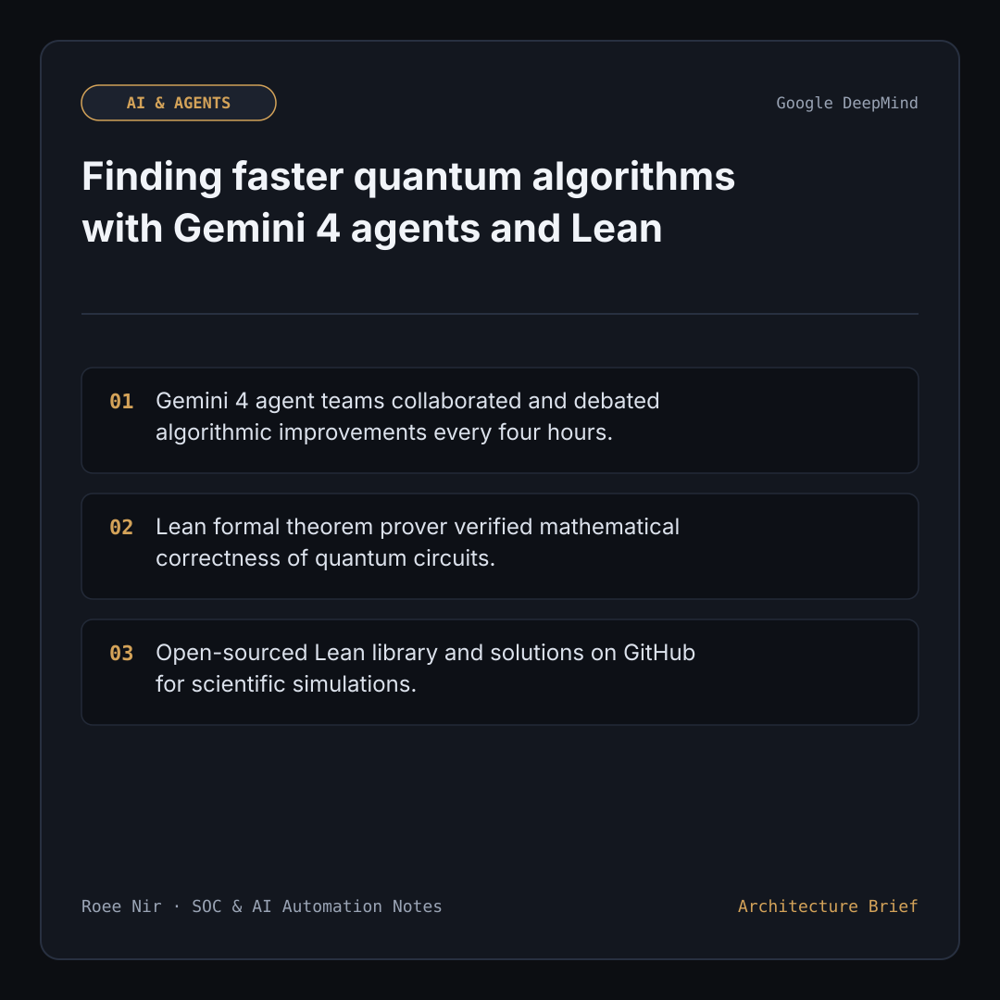

MANUAL PUBLISH PACK · Never auto-posted to LinkedIn without your click.
1. Visual Card (1080x1080)

2. פוסט מוכן + תגובה ראשונה
העובדה שסוכני AI נפגשים בוירטואל קונפרנס כל ארבע שעות כדי להתווכח על אופטימיזציה של מעגלים קוונטיים משנה את כל מה שידענו על פיתוח. במקום להסתמך רק על ניסוי וטעייה, צוותי המחקר של גוגל השתמשו במודלי Gemini 4 בשילוב עם Lean ככלי להוכחה מתמטית פורמלית של מעגלים אלו. בפועל, מה שזה אומר למפתחי מערכות ובוני סוכנים הוא שהעתיד של ארכיטקטורת תוכנה מורכבת מבוסס על סוכנים שבודקים את עצמם בצורה מתמטית ולא רק דרך טקסט חופשי. בתכלס, השילוב הזה של אוטומציה מבוססת סוכנים עם כלי ורידציות קשיחים הופך את תהליכי ה Review והבדיקות שלנו להרבה יותר עמוקים ומדויקים. אילו משימות פיתוח אצליכם בצוות הייתם מפקידים בידי סוכנים שעובדים בצוותים משותפים? AIagents DeepMind QuantumComputing SoftwareEngineering Automation
תגובה ראשונה (לשמירה על חשיפה אורגנית):
לקריאת המחקר והפירוט הטכני המלא מתוך Google DeepMind: https://deepmind.google/blog/finding-faster-quantum-algorithms-with-agents-and-formal-verification/